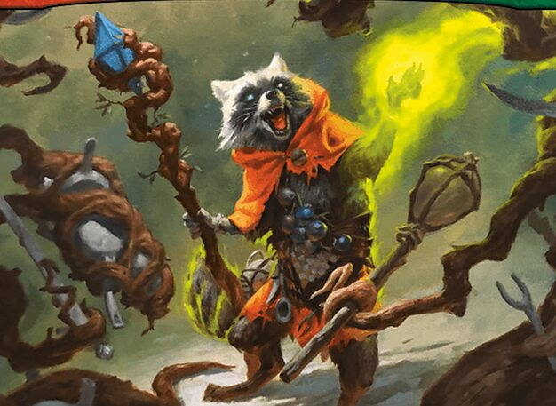

Teval, the Balanced Scale
Solides Mittelfeld
Das Deck gewinnt 26 % seiner Partien – der Schnitt am Vierertisch liegt bei 25 %.
- Stufe · Elo
- B 1496 Platz 31 von 64 in der Rangliste bis 100 €
- Siegquote
- 26 % 125 Siege in 476 Partien, mit 90 % Sicherheit zwischen 23 und 30 %
- Platzierungen
- 122 %9×
- 232 %13×
- 322 %9×
- 422 %9×
Dort ein neues Deck anlegen und die Liste beim Import einfügen.
- Preis
- 99,91 €von 100,00 €
- Partien
- 501in 50 Turnieren, 25 am Zeitlimit nicht gewertet
- Karten
- 10036 Länder, davon 14 Standard
- Game Changer
- 1höchstens 3 erlaubt
- Kombos
- 2komplett im Deck
- Regelcheck
- Bestanden100 Karten, Farben, Bannliste
Höchstens 100 € inklusive Commander. Steigen die Preise darüber, wird die Kaufliste automatisch neu gebaut.
Die Kaufliste wurde am 20.11.2026 mit aktuellen Preisen neu gebaut: Die getestete Fassung kostete inzwischen 100,90 € und lag damit über 100,00 €. Siegquote und Platzierung stammen von der getesteten Fassung.
Stärken und Schwächen
Aus 466 ausgewerteten Partien in 49 Turnieren (mit den Listen, die im Turnier gespielt wurden). Partien am Zeitlimit zählen wie in der Rangliste nicht. Werte in Klammern: Schnitt aller Decks derselben Preisklasse. Die genauen Zahlen siehst du, wenn du mit der Maus auf einen Punkt zeigst oder ihn antippst.
Spielweise: gewinnt über den Kampf – 80 % des Schadens an Gegnern ist Kampfschaden · So gewinnt es: 18 % der Siege durch Überleben – die Gegner schalteten sich gegenseitig aus (Schnitt aller Decks: 31 %)
Stärken
Keine eindeutige Stärke in den Logs.
Schwächen
- Abhängig vom Commander Hinweisohne ihn nur 0 % Siege, mit ihm 28 % · 20 Partien ohne, 446 mit Commander
- Lässt viel Mana liegen sicher34 % der Länder wurden in einem Zug nicht genutzt (Schnitt aller Decks: 26 %) – meist war die Hand leer oder die Karten passten nicht · gemessen in den eigenen Zügen 3–8, 170 Partien
- Wird oft als Erstes ausgeschaltet sicherin 36 % der Partien (Schnitt aller Decks: 25 %) · 167 von 466 Partien
- Tut sich schwer gegen Flieger Hinweis11 % Siege wenn mindestens 40 % der gegnerischen Kreaturen fliegen oder Reichweite haben, 31 % bei höchstens 15 % (Schnitt aller Decks: 19 % zu 27 %) · 47 / 229 Partien
Gegen wen es gewinnt
Siegquote an Tischen, an denen dieser Commander mitspielte – nur Gegner aus der aktuellen Rangliste mit mindestens 20 gemeinsamen Partien. Am Vierertisch liegt der Schnitt bei 25 %.
Gewinnt oft gegen
 61 %von 23
61 %von 23 43 %von 23
43 %von 23 43 %von 30
43 %von 30
Tut sich schwer gegen
 8 %von 25
8 %von 25 9 %von 23
9 %von 23
12 %von 26
Commander (1)
Kreaturen (34)
- Six4,48 €
- Birds of Paradise Ramp3,00 €
- Hedron Crab2,50 €
- Ob Nixilis, the Fallen2,32 €
- Meren of Clan Nel Toth2,04 €
- Aftermath Analyst1,27 €
- GravecrawlerKombo1,16 €
- The Gitrog Monster Ramp1,05 €
- Wight of the Reliquary Ramp0,92 €
- Eternal WitnessKombo0,91 €
- Wonder0,90 €
- Skull Prophet Ramp0,85 €
- Muldrotha, the Gravetide0,79 €
- Sidisi, Brood Tyrant0,70 €
- Avenger of Zendikar0,56 €
- Syr Konrad, the Grim0,53 €
- Kotis, Sibsig ChampionKombo0,49 €
- Stitcher's Supplier0,47 €
- Sakura-Tribe Elder Ramp0,32 €
- Shigeki, Jukai Visionary Ramp0,31 €
- River Kelpie Kartenziehen0,30 €
- Diviner of Mist0,27 €
- Steward of the Harvest0,27 €
- Kheru Goldkeeper RampKombo0,24 €
- Floral Evoker0,23 €
- Multani, Yavimaya's Avatar0,23 €
- Timeless WitnessKombo0,22 €
- Woe StriderKombo0,20 €
- Consuming Aberration0,19 €
- Nyx WeaverKI kann nicht0,18 €
- Kishla Skimmer Kartenziehen0,15 €
- Springbloom Druid Ramp0,13 €
- Tatyova, Benthic Druid Kartenziehen0,12 €
- Millikin Ramp0,09 €
Spontanzauber (8)
- Crop Rotation RampGame ChangerKI schwach3,63 €
- Assassin's Trophy Removal1,22 €
- Tear Asunder Removal0,24 €
- Harrow Ramp0,22 €
- Lethal Scheme Removal0,22 €
- Grisly Salvage0,11 €
- Putrefy Removal0,10 €
- Grapple with the Past0,05 €
Hexereien (11)
- Life from the Loam4,85 €
- Living Death Board WipeKI schwach4,19 €
- Will of the Sultai2,57 €
- Afterlife from the Loam1,33 €
- Farseek RampKI schwach0,63 €
- Victimize0,56 €
- Dread Return0,34 €
- Welcome the Dead Kartenziehen0,30 €
- Cultivate Ramp0,29 €
- Rampant Growth Ramp0,14 €
- Treasure Cruise Kartenziehen0,11 €
Artefakte (5)
- Altar of DementiaKomboKI kann nicht13,39 €
- Hedge Shredder2,21 €
- Conduit of Worlds1,45 €
- Sol Ring Ramp0,71 €
- Arcane Signet Ramp0,34 €
Verzauberungen (5)
- Ripples of Undeath6,75 €
- Phyrexian ReclamationKI kann nicht2,20 €
- Insidious Roots Ramp1,67 €
- Awaken the Honored Dead Removal0,38 €
- Crawling Sensation0,14 €
Länder (36)
- Breeding Pool6,31 €
- Llanowar Wastes1,16 €
- Dreamroot Cascade0,93 €
- Woodland Cemetery0,92 €
- Fabled Passage0,87 €
- Contaminated Aquifer0,47 €
- Hinterland Harbor0,34 €
- Cephalid ColiseumKI schwach0,24 €
- Sunken Hollow0,24 €
- Haunted Mire0,22 €
- Darkwater Catacombs0,21 €
- Command Tower0,20 €
- Opulent Palace0,20 €
- Exotic Orchard0,19 €
- Fetid Pools0,18 €
- Drownyard Temple0,17 €
- Golgari Rot Farm0,17 €
- Temple of Malady0,14 €
- Myriad Landscape0,13 €
- Foreboding Landscape0,10 €
- Memorial to Folly0,09 €
- Terramorphic Expanse0,06 €
- 5× Swamp
- 7× Forest
- 2× Island
Kombos im Deck (2)
Laut Commander Spellbook mit dieser Kartenliste möglich. Was eine Kombo genau braucht, steht dort. Ob eine Kombo in Partien wirklich zusammenkam, steht im Reiter „Partien“.
- Kheru Goldkeeper + Gravecrawler + … → ∞ LTB-Auslöser von Kreaturen, ∞ ETB-Auslöser von Kreaturen, ∞ Opfer-Auslöser von Kreaturen
2 Fassungen, dazu passt jeweils eine von: Altar of Dementia · Woe Strider - Kotis, Sibsig Champion + Altar of Dementia + … → Fast ∞ Züge, Lock (die Gegner können kaum noch spielen)
2 Fassungen, dazu passt jeweils eine von: Timeless Witness · Eternal Witness
Commander Spellbook führt 4 Einträge, weil jede Fassung einzeln zählt (zum Beispiel mit einem anderen Opfer-Ziel). Hier zählt jede Kombo einmal.
Alle 4 Einträge anzeigen
- Kheru Goldkeeper + Gravecrawler + Altar of Dementia → ∞ LTB-Auslöser von Kreaturen, ∞ ETB-Auslöser von Kreaturen, ∞ Opfer-Auslöser von Kreaturen
- Kheru Goldkeeper + Gravecrawler + Woe Strider → ∞ LTB-Auslöser von Kreaturen, ∞ ETB-Auslöser von Kreaturen, ∞ Opfer-Auslöser von Kreaturen
- Kotis, Sibsig Champion + Altar of Dementia + Timeless Witness → Fast ∞ Züge, Lock (die Gegner können kaum noch spielen)
- Kotis, Sibsig Champion + Altar of Dementia + Eternal Witness → Fast ∞ Züge, Lock (die Gegner können kaum noch spielen)
Die Partien in Zahlen
- Commander gewirkt
- 100 %der Partien, in 44 % bis zum 4. Zug
- Schaden je Partie
- 34Schnitt: 31
- Siege im Schnitt
- Zug 12eigener Zug, Schnitt: 12,2
- Als Erstes ausgeschieden
- 36 %167 von 466 Partien, Schnitt: 25 %
- Zu wenig Länder
- 9 %der Partien, davon 12 gewonnen, Schnitt: 9 %
- Mulligans
- 4 %20 in 466 Partien, Schnitt: 6 %
Karten mit messbarem Einfluss
Ein Zusammenhang, kein Beweis: Diese Karten kamen in Siegen deutlich öfter ins Spiel.
- Avenger of Zendikar – gewonnen in 51 % der Partien, in denen sie gewirkt wurde (83), sonst 21 %
- Syr Konrad, the Grim – gewonnen in 49 % der Partien, in denen sie gewirkt wurde (85), sonst 21 %
- Victimize – gewonnen in 49 % der Partien, in denen sie gewirkt wurde (82), sonst 22 %
Was die Partien zeigen
Aus 466 ausgewerteten Partien in 49 Turnieren (mit den Listen, die im Turnier gespielt wurden). Partien am Zeitlimit zählen wie in der Rangliste nicht. Werte in Klammern: Schnitt aller Decks derselben Preisklasse. „sicher“: steht so im Spielprotokoll. „Hinweis“: kommt immer wieder vor, ist aber kein Beweis.
Schaden pro Partie alle Partien
Schaden an Gegnern pro Partie, gerechnet über alle 466 Partien – was die Karte insgesamt beiträgt
- Syr Konrad, the Grim Ø 7,2traf in 98 von 466 Partien
- Teval, the Balanced Scale Ø 7,0traf in 310 von 466 Partien
- Zombie Druid Token Ø 2,9traf in 133 von 466 Partien
Schaden bei Einsatz wenn sie trifft
Gesamtschaden ÷ Partien, in denen die Karte Schaden gemacht hat – ihre Stärke im Einsatz
- Syr Konrad, the Grim Ø 34,5traf in 98 von 466 Partien
- Consuming Aberration Ø 30,6traf in 26 von 466 Partien
- Multani, Yavimaya's Avatar Ø 23,7traf in 27 von 466 Partien
Top-Finisher schaltet Gegner aus
Karten, die am häufigsten einen gegnerischen Commander aus der Partie genommen haben
- Zombie Druid Token 85×466 Partien im Deck
- Plant Token 76×466 Partien im Deck
- Syr Konrad, the Grim 72×466 Partien im Deck
Beste Interaktion räumt auf
Gegnerkarten, die beim Auflösen dieser Karte zerstört, verbannt, zurückgeschickt oder neutralisiert wurden (ohne Spielsteine)
- Living Death 413×Ø 0,9 pro Partie · 466 Partien im Deck
- Necromantic Selection 303×Ø 0,9 pro Partie · 356 Partien im Deck
- Assassin's Trophy 92×Ø 0,2 pro Partie · 466 Partien im Deck
Größte Hindernisse blockt am meisten
Gegnerische Karten, die die Angreifer dieses Decks am häufigsten geblockt haben – insgesamt 14 % der 7381 Angreifer geblockt, davon 16 % durch Flieger oder Reichweite
- Squirrel Token 29×blockte in 5 Partien
- Thopter Token 19×blockte in 6 Partien
- Human Soldier Token 16×blockte in 9 Partien
Selten gewirkt Kandidaten zum Tauschen
Karten dieser Liste, die in ihren Partien am seltensten gewirkt wurden – oft zu teuer oder zu langsam (Länder ausgenommen)
- Steward of the Harvest 0 %gewirkt in 0 von 437 Partien
- Multani, Yavimaya's Avatar 8 %gewirkt in 34 von 446 Partien
- Timeless Witness 9 %gewirkt in 41 von 466 Partien
Siege nach Zug Tempo
In welchem eigenen Zug die 123 Siege kamen
- bis Zug 71 %
- Zug 8–97 %
- Zug 10–1137 %
- Zug 12–1334 %
- ab Zug 1421 %
Kombos im Spiel sicher Kheru Goldkeeper + Gravecrawler + Altar of Dementia: alle Teile gewirkt in 0 Partien, davon 0 gewonnen · Kheru Goldkeeper + Gravecrawler + Woe Strider: alle Teile gewirkt in 6 Partien, davon 2 gewonnen · Kotis, Sibsig Champion + Altar of Dementia + Timeless Witness: alle Teile gewirkt in 0 Partien, davon 0 gewonnen · Kotis, Sibsig Champion + Altar of Dementia + Eternal Witness: alle Teile gewirkt in 0 Partien, davon 0 gewonnen
Elo-Verlauf
Elo nach jedem Turnier, älteste links. Gestrichelt: Stufengrenzen S, A, B, C.
Jetzt 1496, am höchsten 1583 (20.10.), am niedrigsten 1462 – aus 50 Turnieren.
Letzte Partien
Platz in jeder Partie zu viert, älteste links: Gold = Sieg, Silber = 2, Bronze = 3, rot = 4, Ring = Remis.
1223334132221214434334243122442111222134In den letzten 40 Partien 9× Sieg, 13× Platz 2, 9× Platz 3 und 9× Platz 4.
Manakurve ohne Länder
Durchschnitt 3,27
Aufgaben im Deck
Anzahl / Richtwert aus dem EDHREC-Durchschnittsdeck (der Strich), rot heißt deutlich darunter. Strategie: die übrigen Karten ohne eine dieser Aufgaben, etwa die Kreaturen und Effekte, um die sich das Deck dreht. Zusammen 63 Karten ohne Länder.
Kartentypen
- Kreaturen34 %34
- Spontanzauber8 %8
- Hexereien11 %11
- Artefakte5 %5
- Verzauberungen5 %5
- Länder36 %36
Teuerste Karten
Was das Programm gelernt hat
In jedem Turnier testet das Deck eine Karte. Ein Urteil gibt es erst ab 40 Partien mit und ohne die Karte. Weil das Deck jedes Turnier mit aktuellen Preisen und Daten neu gebaut wird, können getestete Karten später wieder herausfallen.
- kein klarer Unterschied Satyr Wayfinder statt Steward of the Harvest · Siegquote 23 % mit, 28 % ohne (159 / 317 Partien)
- kein klarer Unterschied Cultivate statt Lord of the Forsaken · Siegquote 25 % mit, 27 % ohne (114 / 362 Partien)
6 weitere getestete Karten sammeln noch Partien.
Kaufliste für Cardmarket
Liste kopieren, auf Cardmarket unter „Wants“ eine neue Liste anlegen und einfügen.
Zusammen 99,91 € Cardmarket-Durchschnitt vom 22.11.2026
Cardmarket Wants öffnenPreise ohne Versand. Einzelne Karten können bei Cardmarket inzwischen teurer oder günstiger sein.
Gespielt von der Forge-KI, zu viert. Ein durchschnittliches Deck gewinnt 25 %. Wie wird getestet?